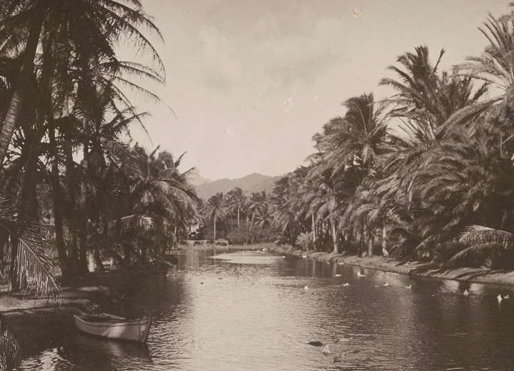
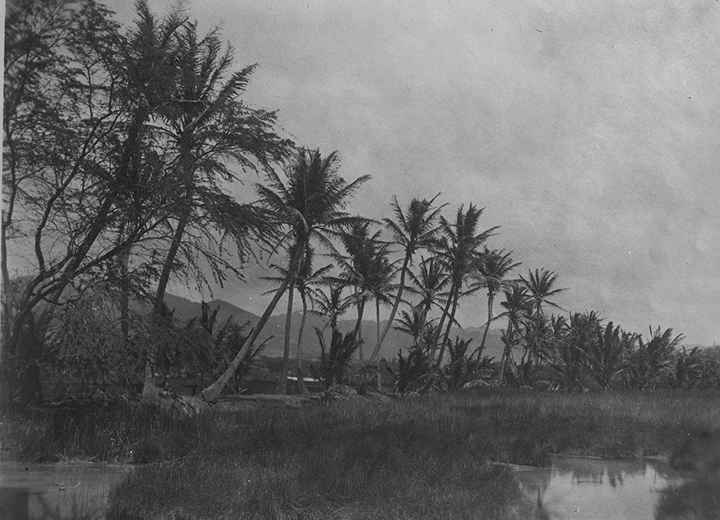

Ward Village traces its roots to the Victoria Ward estate—home to a Hawaiian aliʻi wahine who championed traditional arts, music, and culture in the late 19th century. Since 2010, the area has been evolving into a thoughtfully designed, sustainable neighborhood, blending world-class architecture with local values through community parks, public art, and spaces for both small businesses and residents of Hawaiʻi.
Photo credit: Hawaiʻi State Archives Digital Collection

Once a landscape of wetlands and fishponds, early Kakaʻako was home to small farmers and salt producers before the land was filled using dredged material from nearby harbors. This transformation, intended to address public health concerns, displaced agricultural communities and marked the beginning of urban and industrial development.
Photo credit: Hawaiʻi State Archives Digital Collection